3. Live Concepts
This chapter introduces the essential concepts of Live. We advise you to read this chapter early in your Live career, as a solid understanding of the program’s basic principles will help you make full use of Live’s potential for your music-making.
3.1 The Control Bar
The Control Bar is where you’ll find Live’s transport and tempo controls, as well as other useful controls to customize Live’s scale and MIDI settings, monitor CPU usage, and toggle between the Session and Arrangement View.
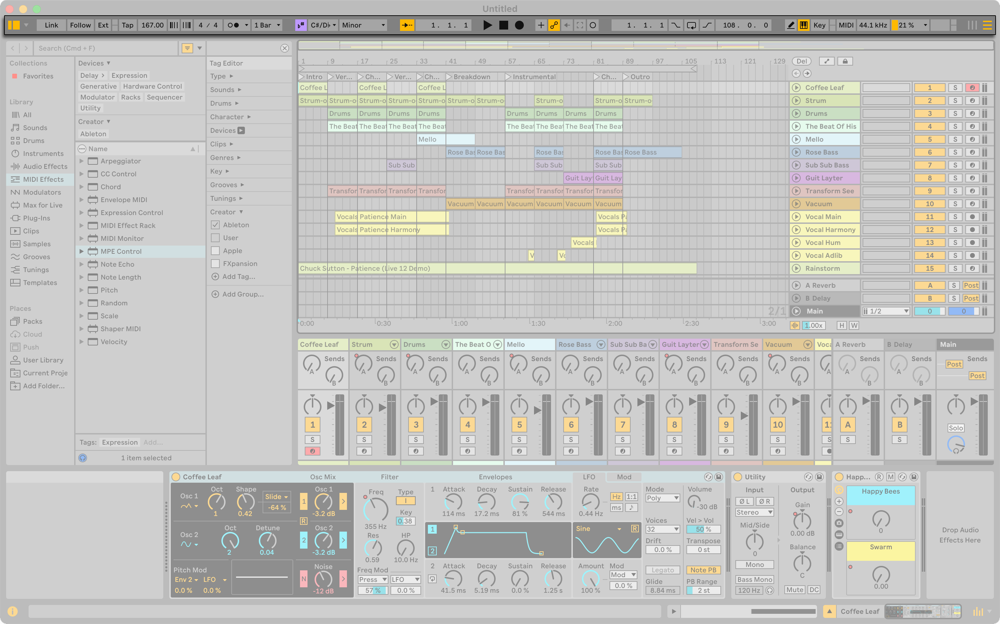
The Control Bar is grouped into nine sections:
Browser Options - This section contains the Show/Hide Browser toggle, which lets you show or hide Live’s browser, and the Browser Config Menu, which includes the options to expand the browser to full height and display the Tuning and Groove Pool sections.
Tempo Settings and Metronome - In this section, you will find controls for activating Link, setting your Set’s tempo and time signature, customizing the metronome, and toggling Tempo Follower on or off.
Scale Settings - This section reflects the scale settings of the currently selected clip. Changes made to scale settings in this section are applied to the currently selected clip/clip slot and to any subsequently created clips or selected clip slots.
Follow and Arrangement Position - In this section, you can turn Follow on or off, as well as view and adjust the current Arrangement position.
Transport Controls - This section contains controls for starting or stopping playback, and for starting Arrangement recording.
Automation and Capture MIDI - This section contains controls for customizing MIDI overdub settings, arming automation, re-enabling automation for currently overriden parameters, capturing MIDI, and starting Session recording.
Arrangement Loop Settings - This section lets you activate and configure the Arrangement loop and the recording punch-in and punch-out points.
MIDI and CPU Settings - This section lets you activate Draw Mode, enable the Computer MIDI Keyboard, turn Key and MIDI map modes on or off, change the project sample rate, and monitor CPU usage.
View Selector - This section contains a toggle that lets you switch between the Session and Arrangement View.
3.2 The Status Bar
The Status Bar displays useful information like error messages or updates about available releases (when Automatic Updates are enabled in the Licenses & Updates Settings).
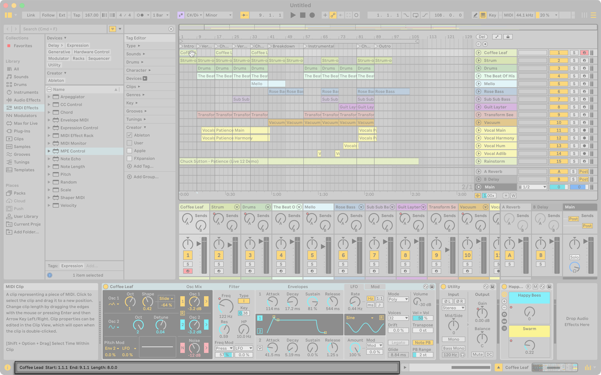
When working in the MIDI Note Editor, the Status Bar also provides helpful details about a selected note’s location, pitch, velocity, and probability. When hovering over an insert marker in the Session or Arrangement View, the Status Bar displays the marker’s precise location.
3.3 The Browser
Live’s browser is the place where you interact with your library of musical assets: the Core Library of sounds that are installed with the program, any additional sounds you’ve installed via Live Packs, presets and samples you’ve saved, built-in and third-party devices, your Sets saved in Ableton Cloud, your files stored on Push, and any folders that you’ve added manually.
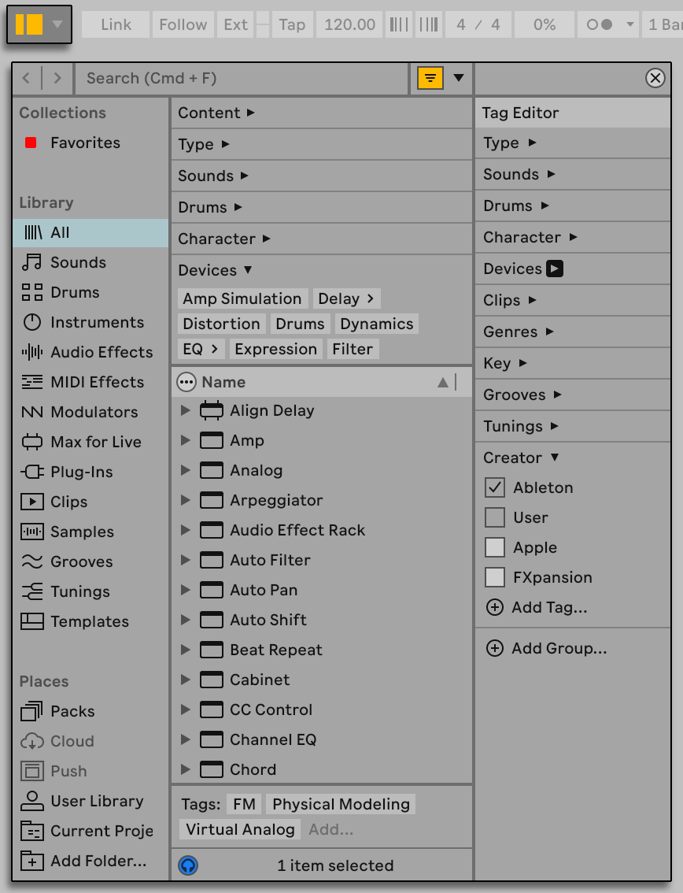
You can show or hide the browser using the dedicated Show/Hide Browser toggle in the Control Bar or by using the shortcut CtrlAlt5 (Win) / CmdOption5 (Mac). You can also use the options in the Browser Config Menu to display additional sections or expand the browser to full height.
3.4 Sound Similarity
Live comes with sound similarity recognition which is used in two features: Similarity Search and Similar Sample Swapping. Similarity Search helps you find sounds similar to a reference file by comparing the reference to the items in the Core Library and the User Library. Similarity Search works with samples up to 60 seconds long, instrument presets, and drum presets. It can also be used in conjunction with Live’s Similar Sample Swapping feature to replace sample files with other similar sounds in Drum Rack, Simpler, or Drum Sampler.
A Show Similar Files icon is displayed next to compatible files that have been selected in the browser.
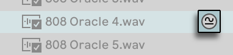
Clicking on the icon will bring up a list of sounds similar to the reference file. You can also right-click an item and select Show Similar Files or use the CtrlShiftF (Win) / CmdShiftF (Mac) shortcut to view this list. The reference file will be shown in the search field and all relevant similar sounding items will be listed below it, ordered from most to least similar.
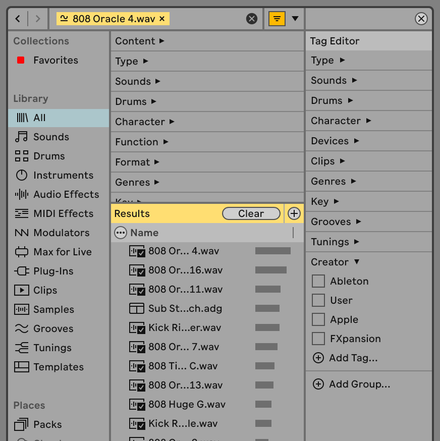
When saving custom User Labels based on a list of Similarity Search results, the sound file that the search was based on is automatically shown at the top of the list.
Sound content needs to be analyzed in order for sound similarity features to work. The sound analysis is performed in the background whenever Live discovers new user audio files. The status of Live’s similarity sound analysis is displayed in the Status Bar when background scanning and analysis are in progress, and a Pause button next to the analysis state can be used to stop this process at any time. Note that the Core Library content is pre-analyzed.
3.5 Live Sets
The type of document that you create and work on in Live is called a Live Set. A Live Set resides in a Live Project — a folder that collects related materials. Once the Project folder is saved, the Set can be opened again using the File menu’s Open command.
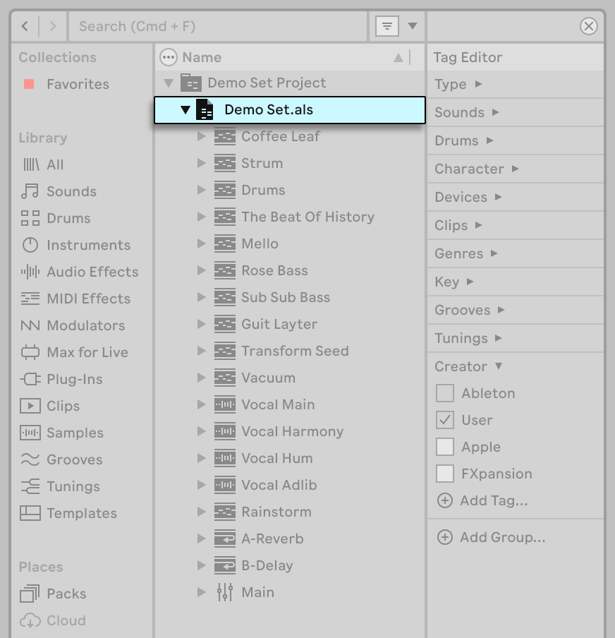
The Live Project folder and related files belonging to the currently open Live Set are also accessible via the Current Project label in Live’s Places.
3.6 Arrangement and Session
The basic musical building blocks of Live are called clips. A clip is a piece of musical material: a melody, a drum pattern, a bassline or a complete song. Live allows you to record and alter clips, and to create larger musical structures from them: songs, scores, remixes, DJ sets or stage shows.
You can work with clips in two views: the Arrangement, which is a layout of clips along a musical and linear timeline; and the Session, which is a real-time-oriented “launching base” for clips. Every Session clip has its own play button that allows launching the clip at any time and in any order. Each clip’s behavior upon launch can be precisely specified through a number of settings.
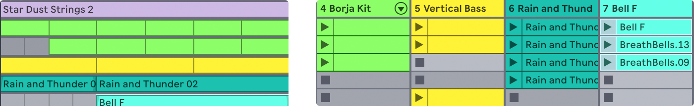
The Arrangement is accessed via the Arrangement View and the Session via the Session View.
If you’re using Live in a single window, you can toggle between the two views using the computer’s Tab key or their respective view controls in the top right corner of Live’s window. If you’re using two windows, pressing Tab will swap the Session and Arrangement from one window to the other. Note that if the ‘Use Tab Key to Navigate’ option is enabled in the Display & Input Settings, pressing Tab will not switch between Arrangement and Session View. However, you can switch between the views using the shortcuts Alt1 (Win) / Option1 (Mac) for Session View and Alt2 (Win) / Option2 (Mac) for Arrangement View. You can also switch between the views at any time using their Navigate menu entries.
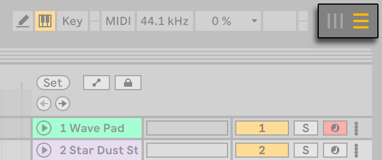
Because the two views have distinct applications, they each hold individual collections of clips. However, it is important to understand that when you switch between the views during playback or recording, only the UI is affected and not the currently playing clips.
The Arrangement View and the Session View interact in useful ways. One can, for instance, improvise with Session clips and record a log of the improvisation into the Arrangement for further refinement. This works because Arrangement and Session are connected via tracks.
3.7 Tracks
Tracks host clips and also manage the flow of signals, as well as the creation of new clips through recording, sound synthesis, effects processing and mixing.
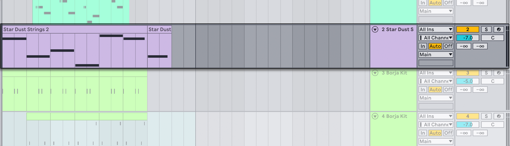
The Session and Arrangement share the same set of tracks. In the Session View, the tracks are laid out in columns, while in the Arrangement View they are stacked vertically, with time moving from left to right.
A track can only play one clip at a time. Therefore, one usually places clips that should play alternatively in the same Session View column, and spreads out clips that should play together across tracks in rows, or what we call scenes.

At any one time, a track can be playing either a Session clip or an Arrangement clip, but never both. Session clips take precedence. When a Session clip is launched, the currently playing clip stops in favor of playing the newly-launched clip. In particular, if an Arrangement clip is playing on the track, it will stop so that the Session clip can be played instead — even as the other tracks continue to play Arrangement clips. The Arrangement clips in the track where the Session clip was launched will not resume playback until you manually restart it using the Back to Arrangement button.
The Back to Arrangement button can be found in the Main track in the Session View and at the top-right of the scrub area in the Arrangement View. This button lights up to indicate that one or more tracks are currently not playing the Arrangement, but are playing a clip from the Session instead.


You can click this button to make all tracks go back to playing the Arrangement. Each track in the Arrangement View also has its own Back to Arrangement button, allowing you to resume Arrangement playback of only certain tracks.
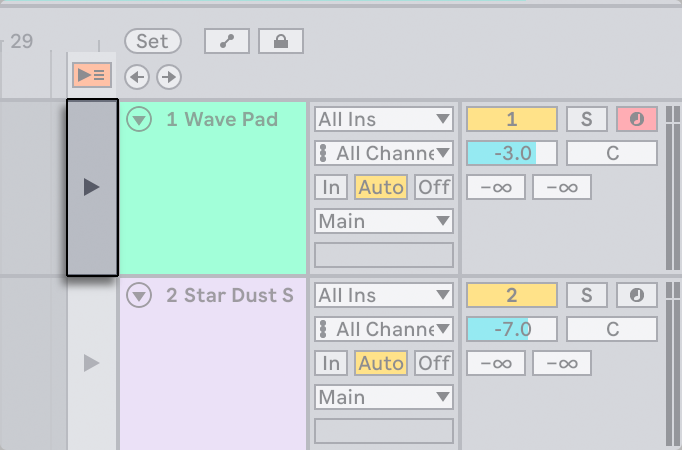
It is also possible to capture the current Session state into the Arrangement by activating the Arrangement Record button from the Session View.
Recording into the Arrangement tracks allows you to create multiple takes for a clip and then put them together into a composite track.
You can also link tracks together to perform the same operations on multiple tracks simultaneously.
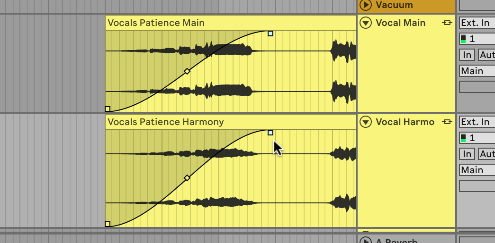
3.8 Audio and MIDI
Live deals with two types of signals: audio and MIDI. In the digital world, an audio signal is a series of numbers that approximates a continuous waveform. The signal can originate from various sources, including audio from a microphone, a sound synthesized or sampled through software, or a signal delivered to a loudspeaker. A MIDI signal is a sequence of commands, such as “now play a C4 at mezzo piano.“ MIDI is a symbolic representation of musical material, one that is closer to a written score than to an audio recording. MIDI signals are generated by hardware input devices such as MIDI or USB keyboards or software devices.
It takes an instrument to convert MIDI signals into audio signals that can actually be heard. Some instruments, such as Live’s Simpler, are for chromatic playing of one sound via the keyboard. Other instruments, such as Live’s Impulse, have a different percussion sound assigned to each keyboard key.
Audio signals are recorded and played back using audio tracks, and MIDI signals are recorded and played back using MIDI tracks. The two track types have their own corresponding clip types. Audio clips cannot be added to MIDI tracks and vice versa.
You can find more information about inserting, reordering, and deleting audio and MIDI tracks in the Audio and MIDI Tracks section of the Mixing chapter.
3.9 Audio Clips and Samples
An audio clip contains a reference to a sample (also known as a “sound file“ or “audio file“) or a compressed sample (such as an MP3 file). The clip contains information that instructs Live where on the computer’s drives to find the sample, what part of the sample to play and how to play it.
When a sample is dragged in from Live’s built-in browser, Live automatically creates a clip to play that sample. Prior to dragging in a sample, one can audition or preview it directly in the browser. When the Browser File Preview button with the headphones icon is toggled on, the preview starts automatically once the sample is selected.
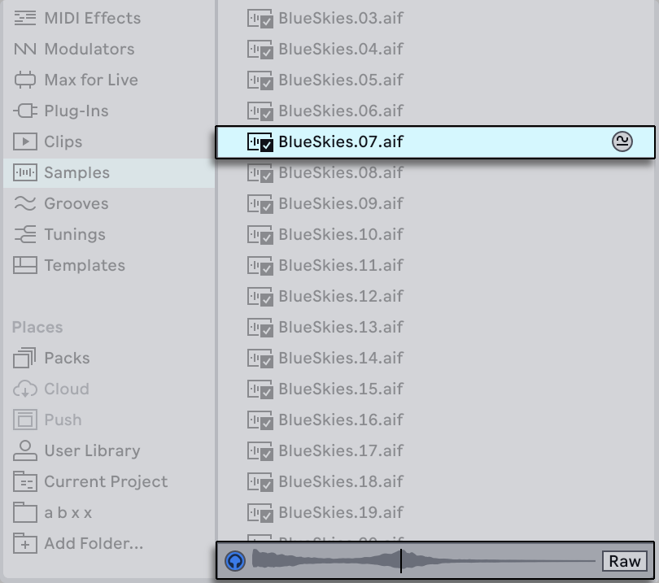
Live offers many options for playing samples in exciting new ways, allowing you to create an abundance of new sounds without actually changing the original sample — all the changes are computed in real time, while the sample is played. The respective settings can be found in the Clip View, which opens when a clip is double-clicked.
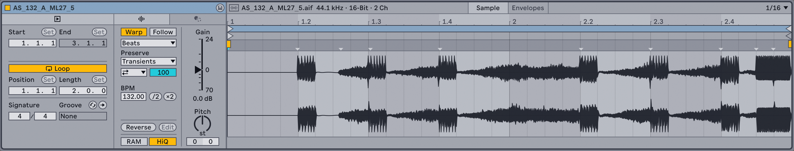
Many powerful manipulations arise from Live’s warping capabilities. Warping means changing the speed of sample playback independently from the pitch so as to match the song tempo. The tempo can be adjusted on the fly in the Control Bar’s Tempo field.
The most elementary use of this technique, and one that usually requires no manual setup, is synchronizing sample loops to the chosen tempo. Live’s Auto-Warp algorithm actually makes it easy to line up any sample with the song tempo, such as a recording of a drunken jazz band’s performance. It is also possible to radically change the sonic signature of a sound using extreme warp settings.
3.10 MIDI Clips and MIDI Files
A MIDI clip contains musical material in the form of MIDI notes and controller envelopes. When MIDI is imported from a MIDI file, the data gets incorporated into the Live Set, and the original file is not referenced thereafter. In Live’s browser, a MIDI file appears with a special icon, and with the .mid file extension.

A MIDI clip’s contents can be accessed and edited via the Clip View, for instance to change a melody or create a drum pattern.
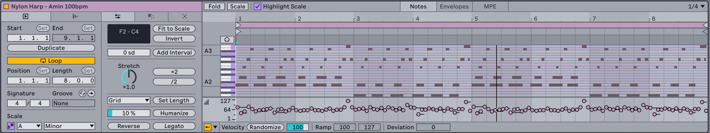
Aside from recording incoming MIDI signals from external devices, Live also allows you to add MIDI notes to clips through Draw Mode, MIDI Tools or audio-to-MIDI converters.
3.11 Devices
A track can contain not only clips but also a chain of devices for processing signals. Double-clicking a track’s title bar brings up the Device View, which shows the track’s device chain.
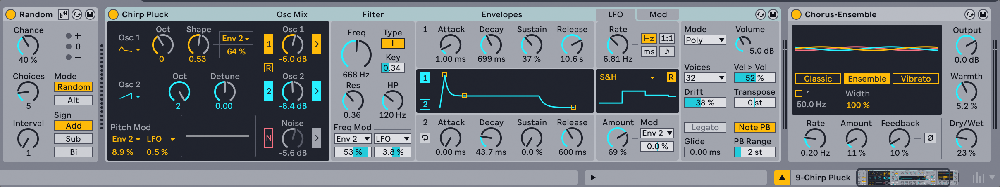
Devices that receive and deliver audio signals are called audio effects. Audio effects are the only type of device that fits in an audio track or a return track. However, two more types of devices are available for use in MIDI tracks: MIDI effects and instruments.
Live’s built-in audio effects, MIDI effects, and instruments are available from the browser. You can add devices to tracks by dragging them from the browser into the Device View, or dragging them onto a Session or Arrangement track. You can also load instruments and effects into a track by selecting them in the browser and pressing Enter.
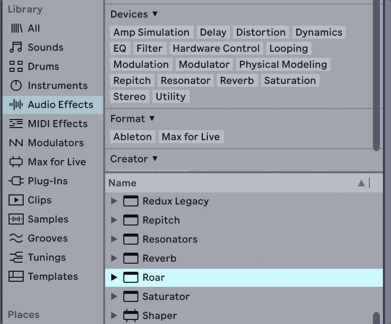
You can also use plug-in devices in Live. VST and Audio Units (macOS only) plug-ins are available from the browser’s Plug-Ins label.
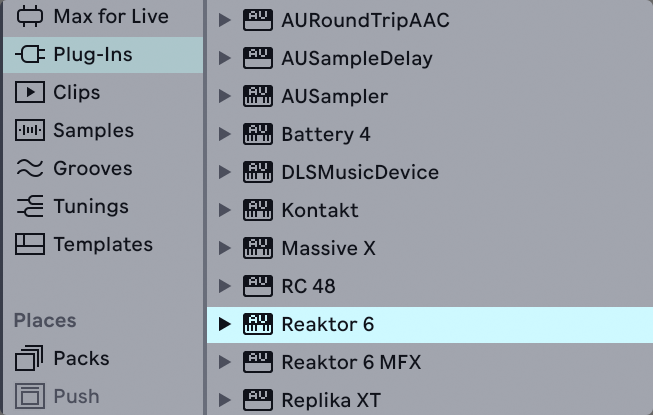
3.12 Clip and Device View
The Clip View is where you can set and adjust clip properties such as start or end points, looping, or scale settings. When in the Session View, you can also access extended clip properties such as follow actions.
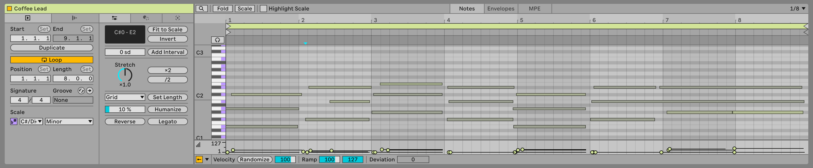
When working with audio clips, the Clip View allows you to access warping controls and audio transformation tools.
When working with MIDI clips, the Clip View includes pitch and time utilities, as well as MIDI Transformation and Generative tools.
The Device View shows a list of the devices currently loaded on a selected track. MIDI tracks can have MIDI effects, instruments, and audio effects loaded. Audio, group, and return tracks can have audio effects loaded.
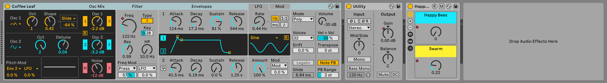
The Clip View and Device View can be stacked, which lets you view them at the same time. To do this, use the triangle toggles next to the Clip View and Device View Selectors located to the left of the Mixer View toggle in the bottom-right corner of Live. You can also use the keyboard shortcuts CtrlAlt3 (Win) / CmdOption3 (Mac) for showing the Clip View and CtrlAlt4 (Win) / CmdOption4 (Mac) for showing the Device View.
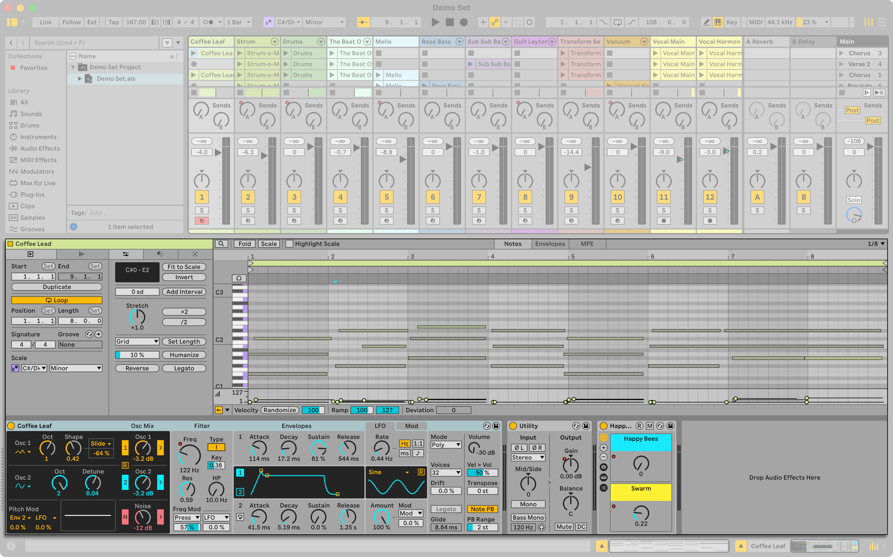
3.13 Scale Awareness
Live’s scale options let you set any clip to a scale of your choice, and can also be used to apply scales across Live’s effects and devices. Once you activate Scale Mode for a given clip, effect, or device, it becomes scale aware.
Scale awareness for clips can be enabled via the Scale Mode toggle in the Control Bar or directly within the Clip View. A root key and scale type can be selected using the Root Note and Scale Name choosers next to the Scale Mode toggle. Scale settings apply to a selected clip or, if no clip is selected, to any subsequently created clips.
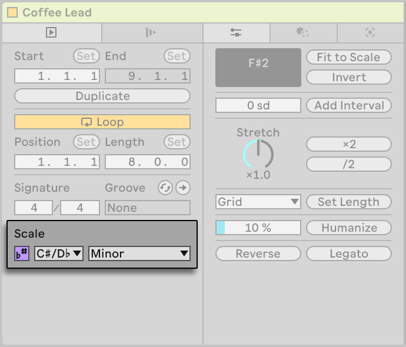
The Scale Mode controls in the Control Bar reflect the current scale settings of any selected clip. These controls can also be used to turn Scale Mode on/off or to set the same scale for multiple selected clips.
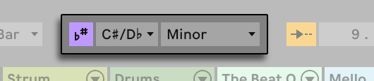
In the Clip View, when Scale Mode is enabled, the Fold to Scale and Highlight Scale options will appear in the MIDI Note Editor. When Fold to Scale is on, only the key tracks that belong to notes of the scale will be displayed in the editor. When Highlight Scale is enabled, the key tracks that belong to notes of the scale will be highlighted in purple, which is the color that signifies scale awareness across Live.
When a scale is active, any pitch-related parameters in MIDI Tools and the Pitch and Time Utilities panel will also use the selected scale.
Live’s Arpeggiator, Chord, Pitch, Random, and Scale MIDI effects include the Use Current Scale toggle in their device title bars. When switched on, a clip’s current scale will be applied and pitch-based device parameters will be adjustable in scale degrees rather than in semitones.
Scale awareness can also be enabled for Auto Shift’s Quantizer and for Meld’s oscillators and filters.
3.14 The Mixer
Consider an audio clip playing in an audio track. The audio signal from the clip reaches the leftmost device in the chain. This device processes (changes) the signal and feeds the result into the next device, and so on. The number of devices per track is theoretically unlimited. In practice, the computer’s processing power imposes a limit on the number of devices you can use at the same time, a topic that deserves separate discussion. Note that the signal connections between audio devices are always stereo, but the software’s inputs and outputs can be configured to be mono in the Audio Settings.
When the signal has passed through the device chain, it ends up in Live’s mixer. As the Session and Arrangement share the same set of tracks, they also share the mixer. The mixer can be shown in both views for convenience.
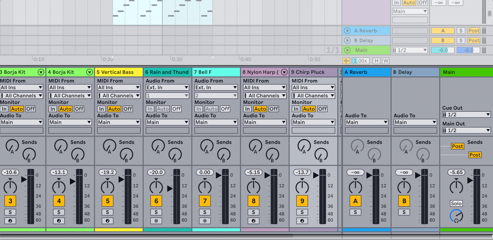
To optimize the screen layout, the individual mixer sections can be shown or hidden using the Mixer Controls entries in the View menu or the options in the Mixer Config Menu in the bottom right corner of Live’s window.
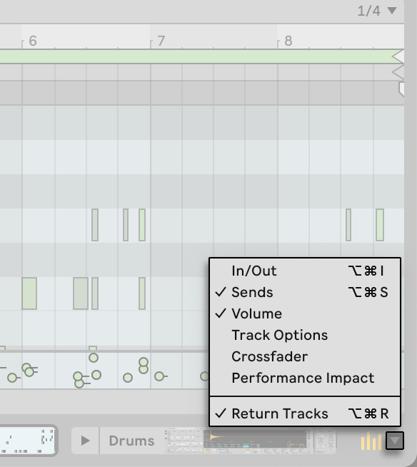
The mixer has controls for volume, pan position and sends, which determine how much of a track’s output feeds the associated return track’s input. Return tracks only contain effects, and not clips. Via their sends, all tracks can feed a part of their signal into a return track and share its effects.
The mixer also includes a crossfader, which can create smooth transitions between clips playing on different tracks. Live’s crossfader works like a typical DJ mixer crossfader, with the exception that it allows crossfading not just two but any number of tracks — including the returns.
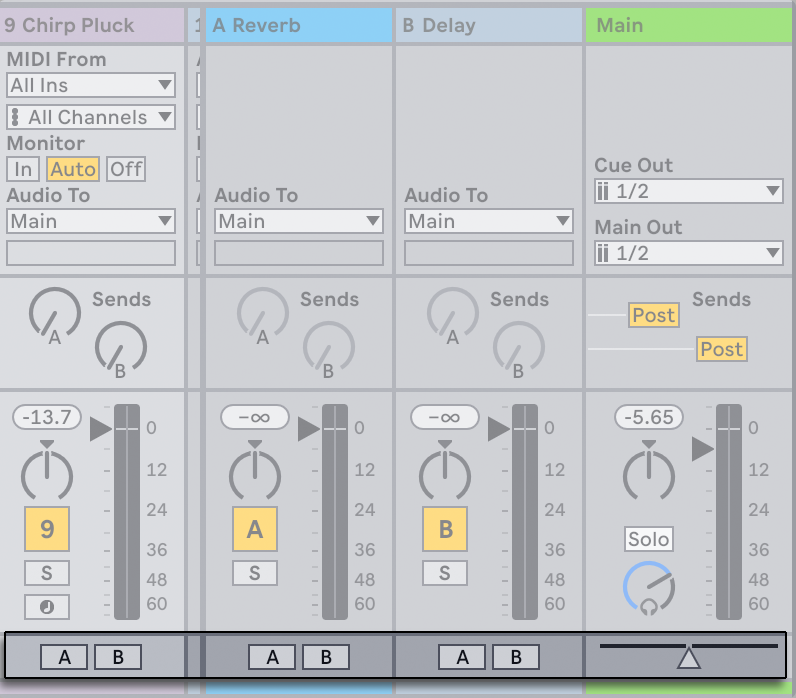
Consider a MIDI track playing a clip. The MIDI signal from the clip is fed into the track’s device chain. There, it is first processed by any number of MIDI effects. A MIDI effect receives and delivers MIDI signals. The last MIDI effect in the chain is followed by an instrument, which receives MIDI and outputs audio. Following the instrument, there can be any number of audio effects — as in an audio track.
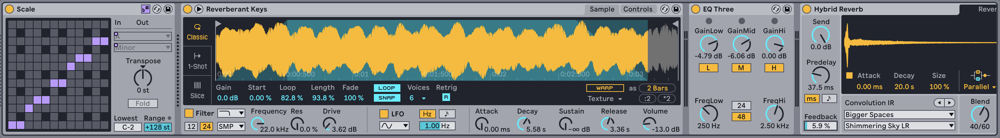
If a MIDI track has no instrument (and no audio effects), then the track’s output is a plain MIDI signal, which has to be sent somewhere else to be converted into audio. In this case, the track’s mix and send controls disappear from the mixer.
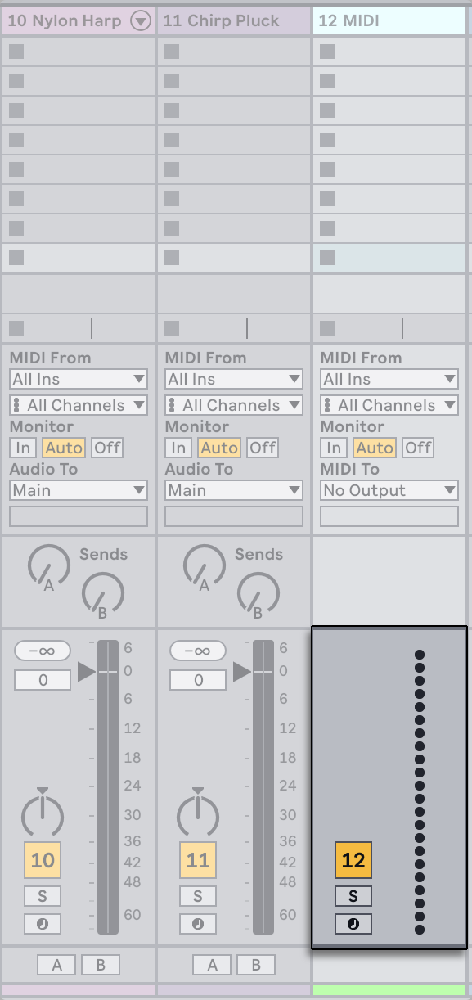
3.15 Presets and Racks
Every Live device can store and retrieve particular sets of parameter values as presets. As presets are stored independently from Live Sets, new presets become part of your User Library that any project can draw from.
Live’s Instrument, Drum and Effect Racks allow saving combinations of devices and their settings as a single preset. This feature makes it possible to put together powerful multi-device creations, effectively adding all the capabilities of Live’s MIDI and audio effects to the built-in instruments.
3.16 Routing
All tracks deliver signals, either audio or MIDI. The targets for these signals are set up in the mixer’s In/Out section, which contains signal source and destination choosers for every track. The In/Out section, accessible via the In/Out option in the Mixer Controls submenu of the View menu, is Live’s “patchbay.“ Its routing options enable valuable creative and technical methods such as resampling, submixing, layering of synths, complex effects setups, and more.
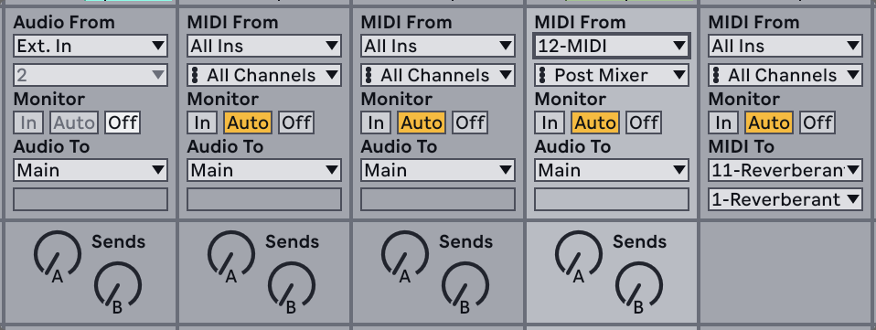
Signals from the tracks can be sent out of Live via the computer’s audio and MIDI interfaces, to different programs that are connected to tracks or devices within Live. Tracks can also be combined into a group track which serves as a submixer for the selected tracks.
Likewise, a track can be set up to receive an input signal to be played through the track’s devices. Again, tracks can receive their input from outside of Live or from another track or device in Live. The monitoring controls regulate the conditions under which the input signal is heard through the track.
It is also possible to route signals to external hardware devices from within a track’s device chain, by using the External Audio Effect and External Instrument devices.
3.17 Recording New Clips
Audio tracks and MIDI tracks can record their input signal and thereby create new clips. Recording is enabled on a track by pressing its Arm button. With multiple tracks selected, pressing any of their Arm buttons will arm all of them. You can also hold down the Ctrl (Win) / Cmd (Mac) modifier when clicking the Arm buttons to arm several tracks at once. If the Exclusive Arm option is enabled in the Record, Warp & Launch Settings, inserting an instrument into a new or empty MIDI track will automatically arm the track. When the Control Bar’s Arrangement Record button is on, every armed track records its input signal into the Arrangement. Every take yields a new clip per track.
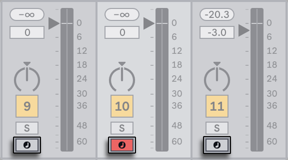
It is also possible to record into Session View slots on the fly. This technique is very useful for the jamming musician, as Session recording does not require stopping the music. Clicking the Session Record button records a new clip in the selected Session scene in all armed tracks.
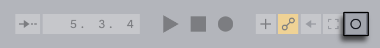
Clicking the Session Record button again stops the recording and launches the new clips. As these actions are subject to real-time launchquantization, the resulting clips can be automatically cut to the beat.
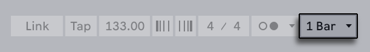
Session recording in conjunction with overdubbing and Record Quantization is the method of choice for creating drum patterns, which are built up by successively adding notes to the pattern while it plays in a loop. It only takes a MIDI keyboard (or the computer keyboard) and a MIDI track with Live’s Impulse percussion instrument to do this.
3.18 Automation Envelopes
Often, when working with Live’s mixer and effects, you will want the adjustments made to the controls’ values to become part of the Set. The changes to a control’s value that happen across the Arrangement timeline or Session clip are called automation; a control whose value changes over time is automated. Automation is represented by breakpoint envelopes, which can be drawn, edited and recorded in real-time.
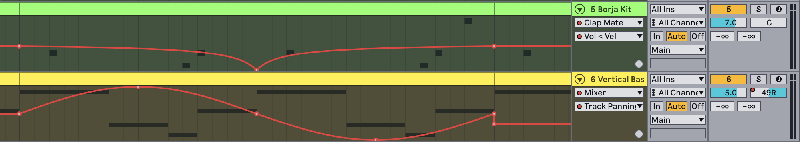
Practically all mixer and effect controls in Live can be automated, even the song tempo. Recording automation is straightforward: all changes of a control that occur while the Control Bar’s Automation Arm and Arrangement Record buttons are on become automation in the Arrangement View. Automation is recorded to Session View clips if controls are adjusted while recording with the Automation Arm button enabled.
Changing an automated control’s value while not recording is similar to launching a Session clip while the Arrangement is playing: It deactivates the control’s automation (in favor of the new control setting). The control will stop tracking its automation and continue using the new value until the Re-Enable Automation button is pressed or a Session clip that contains automation is launched.
3.19 Clip Envelopes
Envelopes can be found in both tracks and clips. Clip envelopes are used to automate or modulate device and mixer controls. Audio clips have additional clip envelopes to influence the clip’s pitch, volume and more; these can be used to change the melody and rhythm of recorded audio. MIDI clips have extra clip envelopes to represent MIDI controller data. Clip envelopes can be unlinked from the clip to give them independent loop settings, so that larger movements (like fade-outs) or smaller gestures (like an arpeggio) can be superimposed onto the clip’s material.
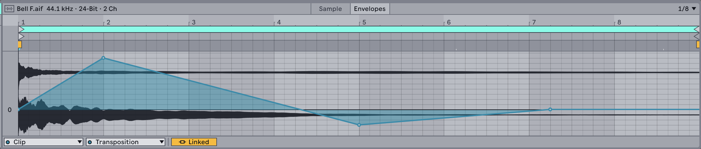
3.20 MIDI and Key Remote
To liberate the musician from the mouse, most of Live’s controls can be remote-controlled via an external MIDI controller. Remote mappings are established in MIDI Map Mode, which is engaged by pressing the MIDI switch in the Control Bar.
In this mode, you can click on any mixer or effect control, and then assign it to a controller simply by sending the desired MIDI message (for example, by turning a knob on your MIDI control box). Your assignments take effect immediately after you leave MIDI Map Mode. Session clips can be mapped to a MIDI key or even a keyboard range for chromatic playing.
MIDI keys and controllers that have been mapped to Live’s controls are not available for recording via MIDI tracks. These messages are filtered out before the incoming MIDI is passed on to the MIDI tracks.
Session clips, switches, buttons and radio buttons can be mapped to computer keyboard keys as well. This happens in Key Map Mode, which works just like MIDI Map Mode.
Live offers, in addition to this general purpose mapping technique, dedicated support for Ableton Push 1, Push 2, and Push 3.
3.21 Saving and Exporting
Saving a Live Set saves everything it contains, including all clips, their positions and settings, and settings for devices and controls. An audio clip can, however, lose the reference to its corresponding sample if the sample is moved or deleted from disk. The links between samples and their clips can be preserved with a special command, Collect All and Save, which makes a copy of each sample and stores it in a project folder along with the Live Set.
A separate Save button in the Clip Title Bar of an audio clip can be used to save a set of default clip settings along with the sample, so that each time the sample is dragged into the program, it will be automatically loaded with these settings. This is especially useful if you have specific warp settings for a clip that you want to use in multiple Live Sets.
Exporting audio from Live can be done from both the Session and Arrangement Views by selecting ‘Export Audio/Video’ from the File menu or by using the shortcut CtrlShiftR (Win) / CmdShiftR (Mac). By default, Live will export the audio coming through on the Main output as an audio file of your specifications via the Export Audio/Video dialog options.
Live can also export individual MIDI clips as MIDI files.
Exporting and saving material for later use in Live can be done very conveniently with the Live Clip format. Session View clips can be dragged back out of a Live Set to the User Library, and thereby exported to the disk as Live Clips.

Live Clips are a very powerful way of storing ideas, as they save not only the clip’s Clip View settings, but also the corresponding track’s instruments and effects chain. Live Clips in the browser can be previewed and added to any open Live Set just like sample files. Once loaded in a Live Set, they are restored with the original envelope and device settings.
Using Live Clips, you can build your own personalized library of:
- MIDI sequences with matching instruments and effects, e.g., a MIDI drum pattern with the associated Impulse and effects settings;
- Different regions or loops referencing the same source file;
- Variations of a sample loop created by applying Warp Markers, clip envelopes and effects;
- Ideas that may not fit your current project but could be useful in the future.